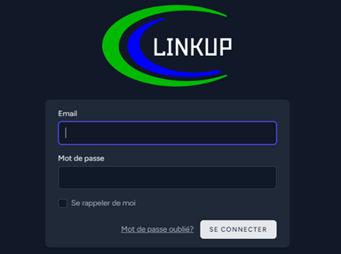
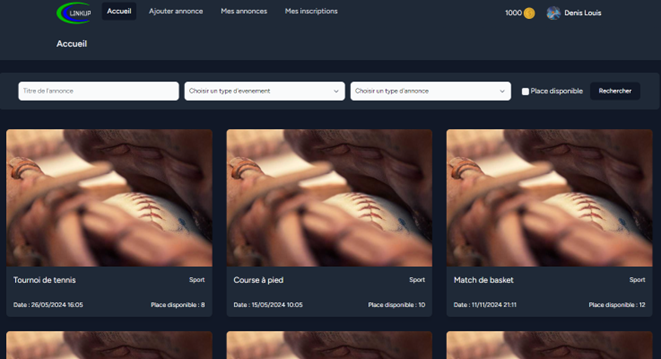
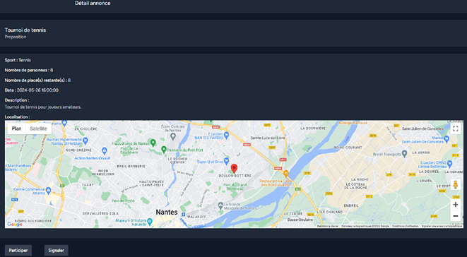
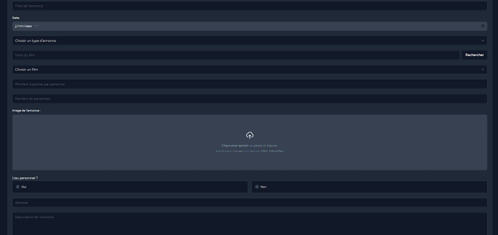
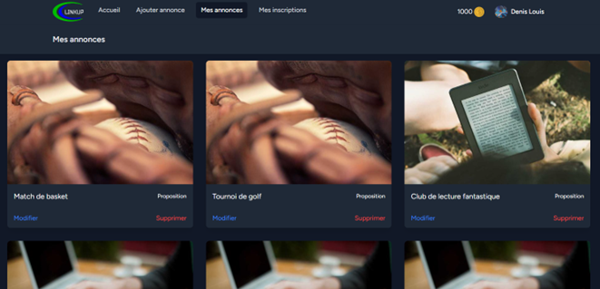
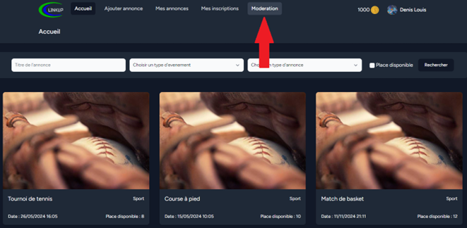
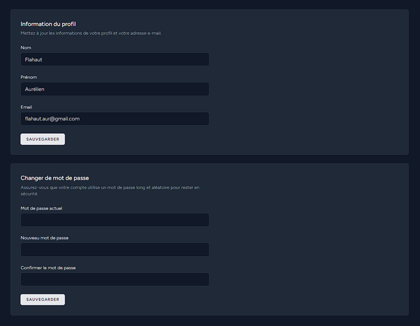

Réseau social développé pour le Lycée Polyvalent Chevrollier, permettant la gestion des annonces et des événements.
Notre entreprise fictive Desoxia a créé et mis en production 3 solutions applicatives pour répondre à un besoin exprimé en tant que réseau social pour le Lycée Polyvalent Chevrollier. Pour ce faire, nous avons développé 3 solutions : un site web, une application lourde et une application mobile. Nous avions un cahier des charges à respecter mettant en avant des obligations sur la structure, les fonctionnalités et les tâches à accomplir en priorité.
Nous avons également mis en place des déclencheurs pour sécuriser au mieux les données et leur intégrité au sein de la base. Voici les déclencheurs :
Avant de pouvoir accéder au site et à ses fonctionnalités, il faut se connecter via l’interface de connexion. Lors de la première connexion, un message s’affiche indiquant à la personne qu’elle a reçu un mail lui permettant de changer son mot de passe.
Après connexion, la page d’accueil affiche les menus dans le header, le nombre de crédits possédés, et le profil utilisateur. Un bandeau permet de filtrer les annonces par titre, type d’événement, type d’annonce, et places disponibles. Les annonces sont affichées avec leur titre, type d’événement, date de l’événement, et nombre de places.
En cliquant sur une annonce, une nouvelle page s'ouvre avec toutes les informations utiles, une carte interactive pour le lieu, et deux boutons : participer et signaler.
Cliquer sur "Ajouter une annonce" ouvre un formulaire pour choisir l'événement et renseigner les détails spécifiques à chaque type d'événement. Chaque type d’événement (sport, cinéma, covoiturage, loisir, compétences, lecture) a son propre formulaire.
La section "Mes annonces" affiche toutes les annonces de l'utilisateur avec des boutons pour les modifier ou supprimer. La section "Mes inscriptions" montre toutes les annonces auxquelles l'utilisateur est inscrit, avec des options pour voir les détails, se désinscrire, ou signaler.
Accessible uniquement aux modérateurs, cette section montre toutes les annonces, y compris celles cachées aux utilisateurs. Les modérateurs peuvent signaler ou cacher des annonces, et signaler des utilisateurs.
Les utilisateurs peuvent modifier leurs informations personnelles et leur mot de passe via la page profil. Des vérifications sont effectuées pour s'assurer que le mot de passe actuel est correct et que le nouveau mot de passe est confirmé correctement.
Ce projet est bien abouti même s’il manque quelques fonctionnalités comme le chat en temps réel ou le système de paiement pour les annonces nécessitant finance. Ces deux fonctionnalités peuvent être de potentielles évolutions futures. Nous sommes cependant satisfaits du résultat final.